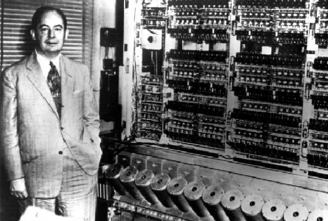

John von Neumann, nascido Margittai Neumann János Lajos (Budapeste, 28 de dezembro de 1903 — Washington, D.C., 8 de fevereiro de 1957) foi um matemático húngaro de origem judaica, naturalizado estadunidense. Contribuiu na teoria dos conjuntos, análise funcional, teoria ergódica, mecânica quântica, ciência da computação, economia, teoria dos jogos, análise numérica, hidrodinâmica das explosões, estatística e muitas outras áreas da matemática. De fato é considerado um dos mais importantes matemáticos do século
